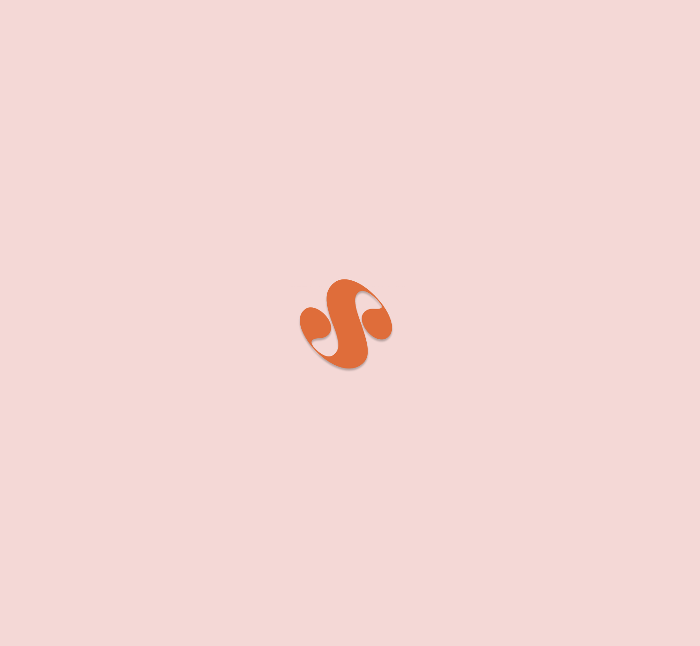
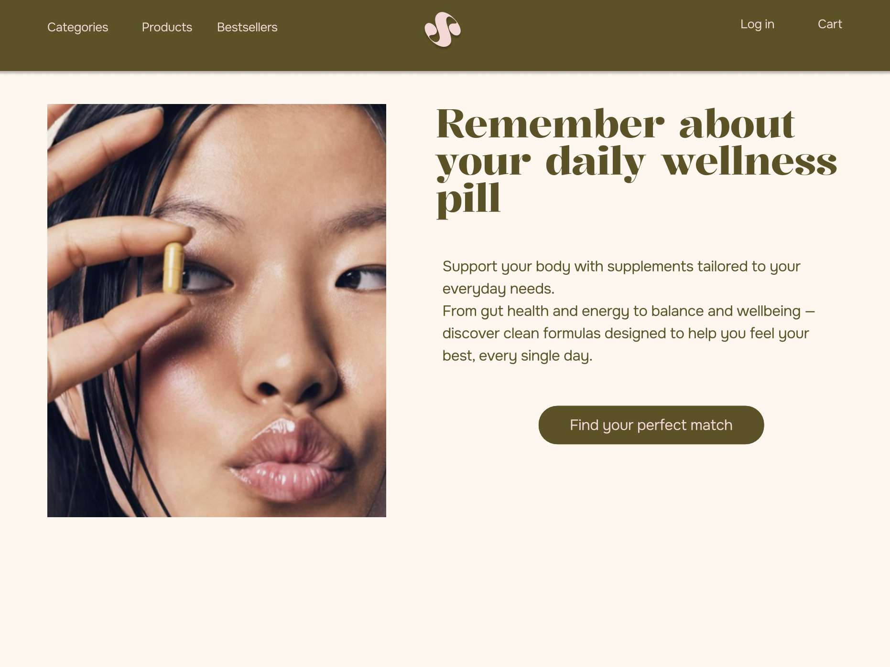
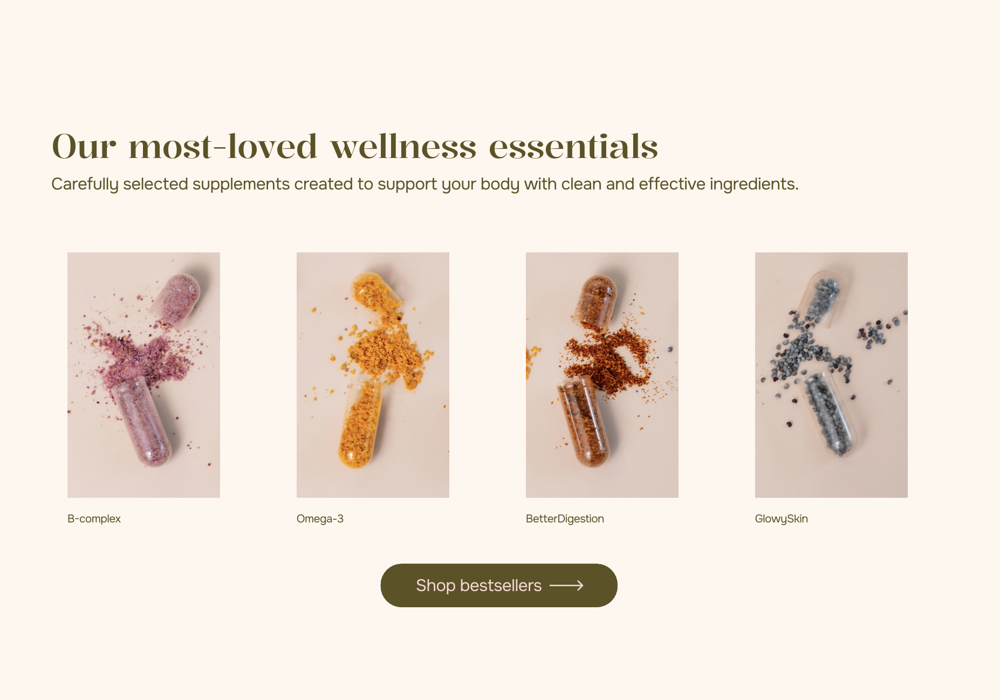
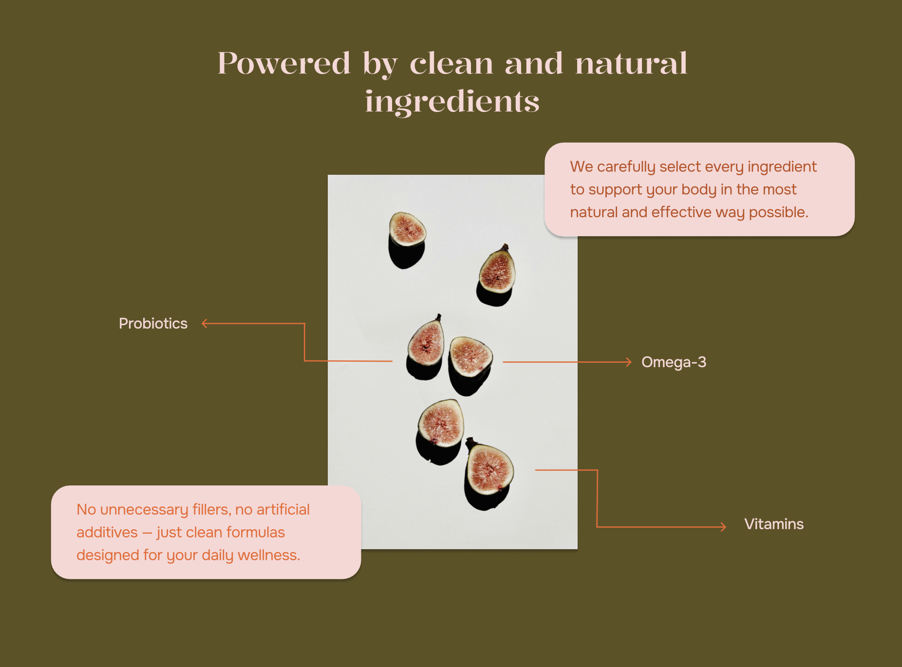
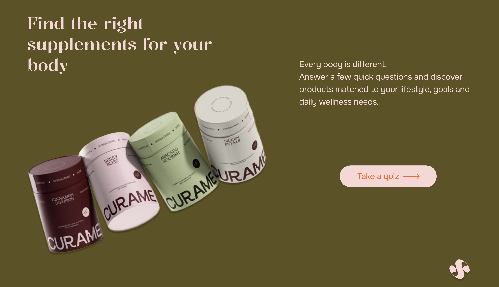
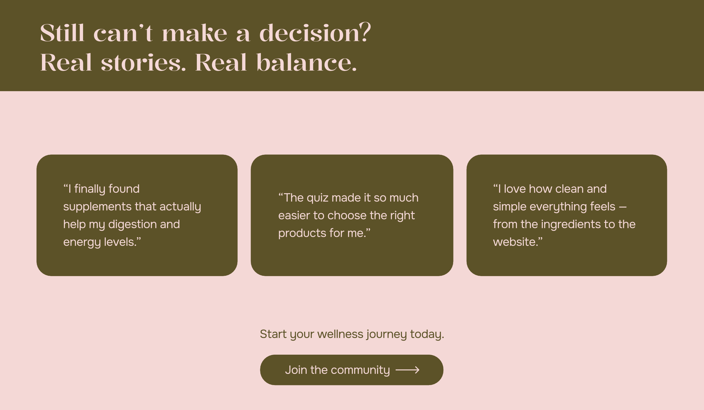
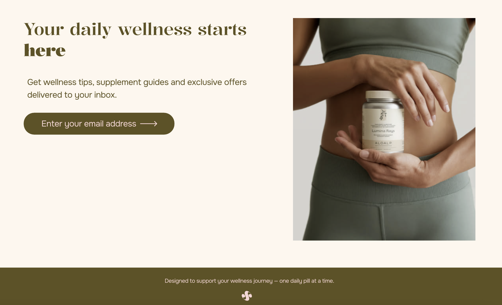
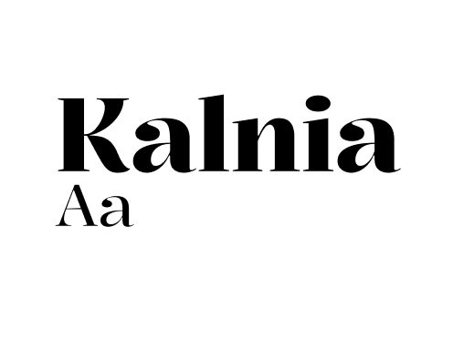
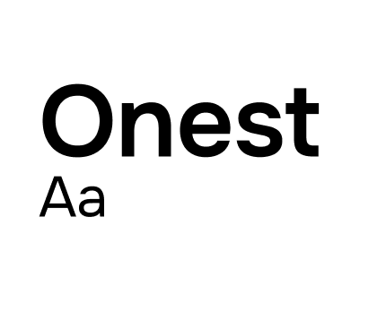

— strona internetowa z suplementami
Projekt przedstawia nowoczesną stronę internetową marki suplementów wellness skierowanej głównie do kobiet dbających o zdrowie i świadomą suplementację.
Głównym celem projektu było stworzenie przejrzystego, budzącego zaufanie doświadczenia, które ułatwia dobór suplementów dopasowanych do indywidualnych potrzeb organizmu. Warstwa wizualna łączy styl premium wellness z nowoczesnym interfejsem, tworząc ciekawy i przyjazny odbiór marki.






Użytkownicy mają trudność z doborem odpowiednich suplementów — rynek jest przesycony ofertami, a brak spersonalizowanego podejścia powoduje frustrację i brak zaufania do marki.
Kluczowym wyzwaniem było zaprojektowanie ścieżki użytkownika, która w prosty sposób prowadzi od wejścia na stronę do świadomego wyboru produktu — bez przytłaczania informacją.
W celu zapewnienia pozytywnych doświadczeń użytkownika oraz zwiększenia trafności decyzji zakupowych zastosowano rozwiązania takie jak quiz dopasowujący suplementację do indywidualnych potrzeb, przejrzyste karty produktów oraz sekcję opinii i historii użytkowników.
Typografia


Kolorystyka
Projekt nauczył mnie jak ważna jest spójność wizualna w budowaniu zaufania do marki. Każdy element wpływa na doświadczenie klienta i zachęca go do stania się częścią społeczności.